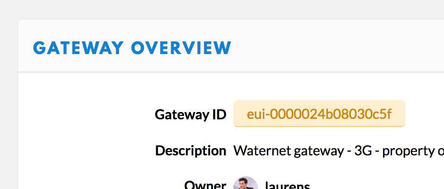

Semtech UDP Packet Forwarder
Outdated: this section documents The Things Network V2, which is no longer maintained. See the documentation for The Things Stack V3, or browse the V2 docs index.
If the Semtech UDP Packet Forwarder does not seem to be working, these steps should help you identify the issue.
This section contains the most frequent issues with packet forwarders. If you find issues that are not covered in this guide, feel free to reach out to The Things Network community forum.
Ensure the packet forwarder is running #
You will first want to ensure that the process is correctly running. Depending on your system, you can use ps, ps -a or ps -A to display all the running processes. It will return a list of processes, with their PIDs:
admin@gateway:/# ps -A
PID TTY TIME CMD
1 ?? 00:00:00 init
6 ?? 00:00:00 poly_pkt_fwd
8 pts/0 00:00:00 sh
10 pts/0 00:00:00 ps
You will usually identify the packet forwarder process with the pkt_fwd keyword: common names for the process are poly_pkt_fwd, mp_pkt_fwd, basic_pkt_fwd or gps_pkt_fwd.
If the process is not in the list, it is likely that the packet forwarder is not running. This could be due to several reasons:
Improper installation #
The packet forwarder could be installed improperly, and never started. Look at the documentation you used to ensure the packet forwarder is correctly installed. If you did not install anything yourself, please contact the gateway manufacturer or vendor that installed the gateway.
The packet forwarder did not start #
This can be due, for example:
-
To an invalid configuration.
-
To a communication error with the LoRa concentrator. This highly depends on your gateway. Some gateways do not require any configuration to communicate with the LoRa concentrator ; other gateways require executing actions before communicating with the concentrator. For example, the Kerlink IoT Station requires executing a script called
modem_on.shto communicate with the concentrator after starting the OS. There are also edge cases for some gateways that prevent communication with the concentrator in specific circumstances.
This usually manifests by a failed to start the concentrator error when starting the packet forwarder - to confirm this, check the logs of the packet forwarder.
Unexpected stop #
The packet forwarder could have quit unexpectedly, and did not restart. The Semtech UDP Packet Forwarder is usually stable, and this situation does not happen often - however, some circumstances can lead to this, for example if you have other processes on the gateway consuming a lot of resources. If this happens often, you will want to look at the root causes of why the packet forwarder is quitting - the logs might help you to isolate it. You might also want to look at mitigation strategies - such as, wrapping the packet forwarder process in a managing process that will restart it when it quits.
Logs #
Find log file #
In some gateways, you will have access to the logs in the filesystem. Once you find the file in which the logs are being saved, you can read and follow them as they are being written by executing tail -f <filename> (see man tail). Here are known log file locations:
| Model | Location |
|---|---|
| Multitech Conduit | /var/log/lora_pkt_fwd.log |
| Kerlink IoT Station | /mnt/fsuser-1/thethingsnetwork/poly_pkt_fwd.log starting from DOTA V1.4 (January 2018) |
Manually start the packet forwarder #
If you cannot find where the logs are being saved, you can also troubleshoot by starting the packet forwarder in your terminal.
To retrieve the logs in the shell by starting the packet forwarder yourself:
-
Stop the running packet forwarder process, by using
kill -9 <packet forwarder PID>. You can find the PID of the packet forwarder with thepscommand, see above. -
Find the directory in which the binary of the packet forwarder is located. For example, for Kerlink packet forwarders, it will be in
/mnt/fsuser-1/thethingsnetwork; for Multitech packet forwarders, it is often located in/opt/lora. -
Find the directory in which the configuration file of the packet forwarder is located. Depending on the installation, it is sometimes located in the same directory (e.g. for Kerlink gateways), and sometimes in a different directory (e.g. Multitech gateways, where it is located at
/var/config/lora). -
From the directory where the configuration is located, execute the packet forwarder. The packet forwarder will look for configuration in the directory of execution. In the logs of the packet forwarder, you will be able to see if the packet forwarder is able to start or not. You may also specify the folder with configuration by passing the
-c <folder>flag to the packet forwarder.
Common issues #
The packet forwarder is running, however you are still having issues with it - it does not show up in the Console, or it seems that your specific gateway has an unexpected behavior.
Network issue #
It could be that your gateway is not connected to the network server. To check this, look at this line of the status logs:
##### 2016-01-05 18:17:08 GMT #####
[...]
### [DOWNSTREAM] ###
# PULL_DATA sent: 3 (100.00% acknowledged)
[...]
100% of the PULL_DATA should be acknowledged. If 0% is acknowledged, it means the gateway is not connected. Check that:
-
Your gateway is connected to Internet. This can be checked by using
ping 8.8.8.8, and seeing if you receive a response. -
If there is a firewall, that the firewall allows outgoing packets on UDP port 1700.
-
The network server address and ports are correctly set in the packet forwarder configuration. For example, for the EU region of The Things Network, you will find here the server addresses - such as
router.eu.thethings.networkorrouter.kr.thethings.network.
There is also a possibility that the network itself is down. Check our status page for more information on the status of The Things Network.
Gateway not detected #
If the logs of your gateway indicate a 100% acknowledgement of PULL_DATA but the Console still does not show your gateway as connected:
-
Check that in your gateway configuration,
server_addressis set on a The Things Network router. If you are using a private network, make sure thatserver_addressis not pointing to The Things Network, but to your own router. -
When registering the gateway on the Console, you should have checked I’m using the Semtech UDP Packet Forwarder, and have entered the same EUI as
gateway_IDin your configuration file. At the end of the registration, this will create a gateway on TTN of which the ID will beeui-<eui>For example, ifgateway_IDis equal toAA555A0000000101, the registration will create a gateway with the IDeui-aa555a0000000101on the Console.
For example, this gateway should have
"gateway_ID": "0000024B08030C5F"in its configuration.
Uplink issues #
CRC issues #
In the logs, you can see statistics regarding CRC checks of the packets received by the gateway:
[...]
### [UPSTREAM] ###
# RF packets received by concentrator: 4
# CRC_OK: 100.00%, CRC_FAIL: 0.00%, NO_CRC: 0.00%
[...]
A CRC check is a verification made by the gateway to ensure that an uplink has not been altered during transmission. If a packet is transmitted successfully to the gateway, the CRC check will pass. If the packet was altered (because of e.g. interferences), CRC check will fail. Even if a packet that failed CRC check is transmitted to the network server, it is often unparsable and wo not be sent to the application.
Reasons why a gateway can have a high rate of CRC failures are:
-
If one or multiple devices nearby is faulty.
-
If there is a lot of noise on the reception band, the concentrator might interpret random signals as LoRa packets, which will fail CRC check.
-
If the configuration of the gateway does not match the concentrator used ; for example, if a 868MHz concentrator is configured for a 915MHz frequency plan.
-
If the antenna of the gateway is faulty, preventing correct reception of messages.
Filtering packets #
In LoRaWAN, there’s no concept of devices connecting to gateways - a device joins a network, and a gateway only relays RF packets received to the configured network server, which then handles activating devices and transmitting messages regardless of the gateway it was transmitted through.
The Semtech UDP Packet Forwarder does not filter received uplinks based on the network, and transmits all received packets to the Things Network (which will then filter packets, and drop packets from other networks). It is not possible to select which packets the packet forwarder should transmit.
Downlinks issues #
The gateway does not receive any downlink #
If a gateway that is not registered on the Things Network connects anyway using the Semtech UDP Packet Forwarder, the Things Network will accept upcoming uplinks - however, the Things Network wo not use that gateway for downlink transmission.
If you notice that your gateway is not being sent any downlink, it could be that:
-
There’s a gateway nearby with better coverage and signal, that is prioritized by TTN
-
Your gateway is not recognized by TTN. Make sure that you have registered your gateway on the Console, and that the gateway ID on the Console matches the EUI entered in the configuration of the gateway.
Downlinks are not transmitted by the gateway #
It can happen that a gateway is indicated as connected in the Console, transmits uplinks, but does not transmit any of the downlinks it receives from the Things Network. This is usually due to latency issues between the gateway and the network server.
If you have isolated the issue, and are confident that the issue comes from the gateway, check in the logs the time in which PULL_ACK messages are being received by the network server:
INFO: [down] for server 54.72.145.119 PULL_ACK received in 105 ms
INFO: [down] for server 54.72.145.119 PULL_ACK received in 104 ms
If the delay in which PULL_ACK messages are received is too long (e.g. >300ms), it means that there’s a high latency between the gateway and the network server - it can then happen that the downlink is received too late by the gateway.
You can detect downlinks being received too late in two places in the logs: either if TOO_LATE messages appear in the logs, or if there is a line in the status logs indicating TX rejected (too late) messages.
If you often encounter downlink arriving too late at the gateway, you might want to check your internet connection. One way to mitigate this effect is to use the router closest to your location. Other reasons for high latency are cellular or satellite backhauls for gateways.